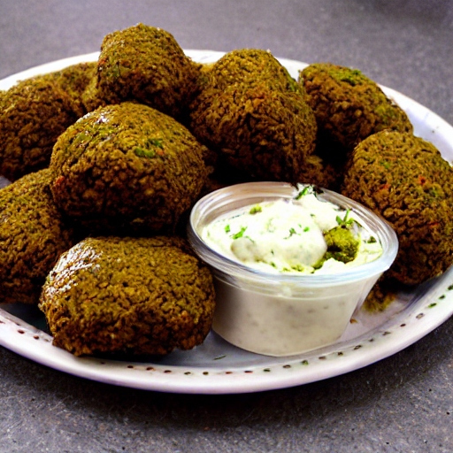

Authentic Falafel Recipe

This is my favorite falafel recipe! with a few simple triks
Falafel Ingredients:
- chickpeas
- Tahini
- Fresh lemon Juice
- Fresh Garlic
Prepration:
- Add (uncooked) chickpeas to a large pot and cover with 2 inches water. Bring to a boil over high heat and boil for 1 minute. Then cover, remove from heat, and let sit for 1 hour. This is a quick method. Alternatively, soak overnight or at least 6 hours in cool water.
- Drain and rinse chickpeas and add back to the pot. Cover with 2 inches water and add kombu (optional) for improved digestibility and baking soda (optional) for creamier texture (a reader tip!).
- Bring to a boil. Then reduce to a simmer and cook uncovered for 45 minutes to 1 hour or until tender (but not mushy). Remove kombu and discard.
- Add cooked chickpeas to a food processor or high-speed blender (a blender will get creamier texture!) along with garlic, tahini, lemon juice, sea salt, and olive oil (or water). Blend until creamy and smooth, scraping down sides as needed.
- At this point, you can add garlic powder and herbs (optional
- If the hummus is quite thick, add water (or additional oil) to thin until a creamy dip has formed